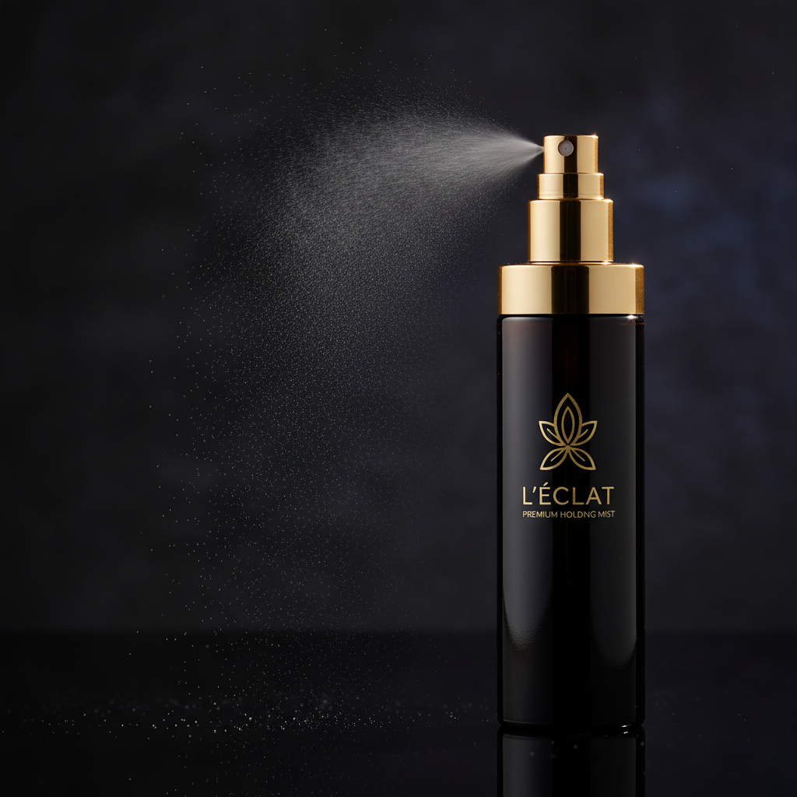
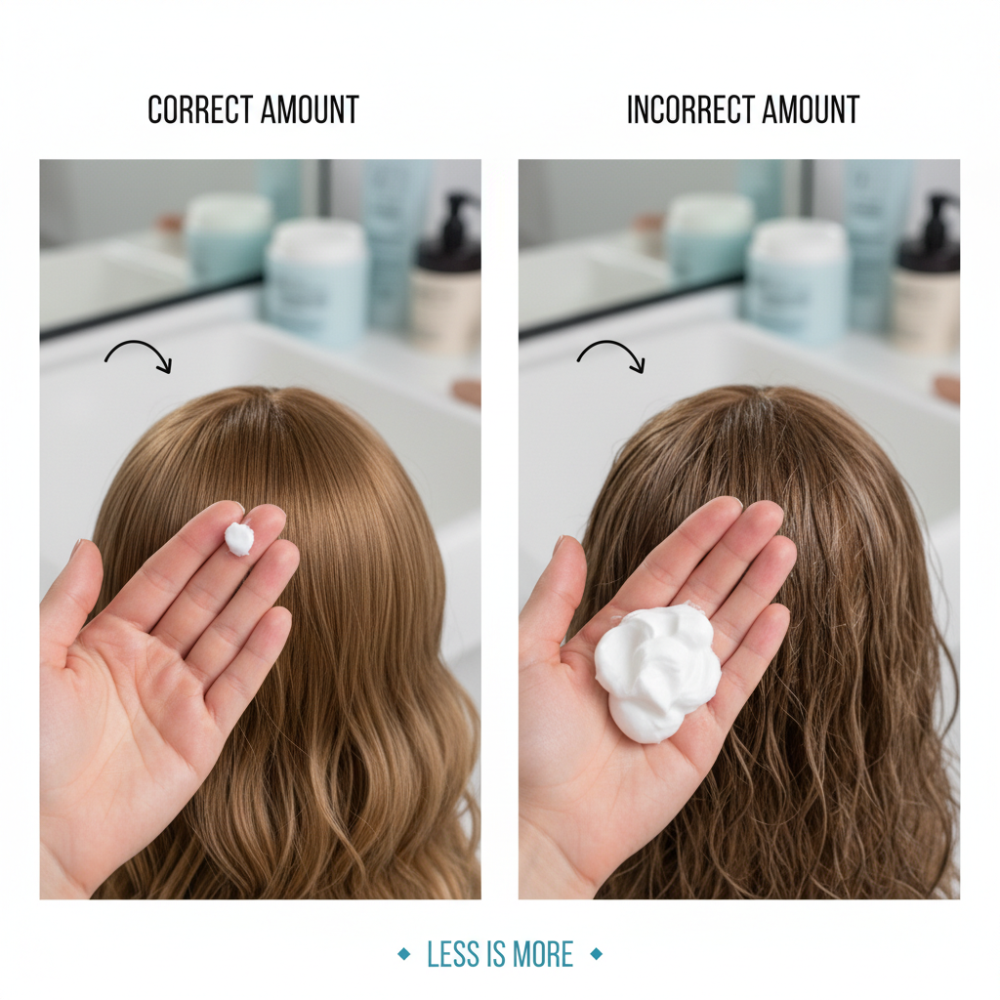
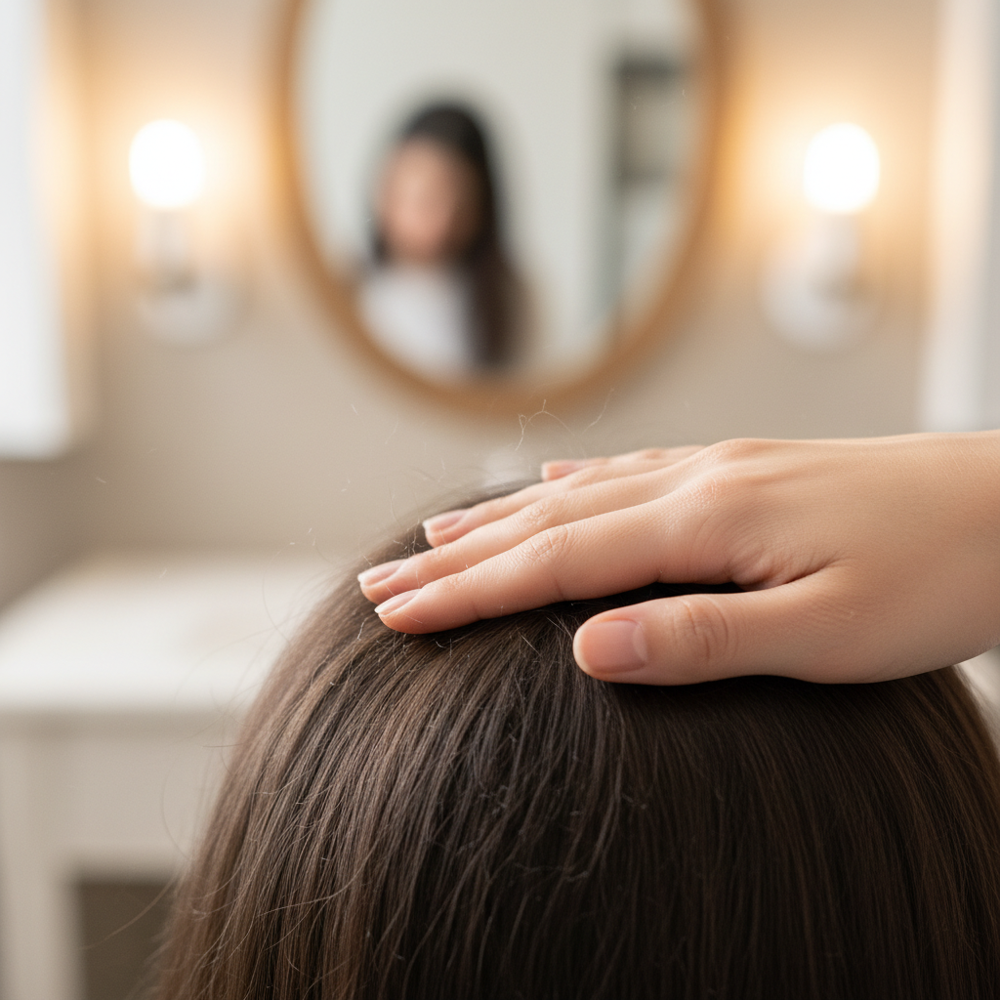

You've found the perfect shade, applied your hair fibers, and the results look incredible. But will they last through your entire day? Whether you're heading to an important meeting, a special event, or simply want to maintain that confident look from morning to night, proper application technique makes all the difference.
Follow these five professional tips to ensure your Halo Fibers stay in place all day long, maintaining that natural, fuller look without touch-ups.
Apply to Completely Dry, Styled Hair
This is the golden rule of hair fiber application. Your hair must be 100% dry before applying fibers. Even slight dampness prevents proper adhesion and can cause fibers to clump or wash away.
Why it matters: Hair fibers work through static cling, binding to dry hair strands. Any moisture disrupts this bond. Additionally, wet or damp hair changes volume as it dries, which can create uneven coverage.
Best practice: Style your hair completely first—blow dry, straighten, curl, or whatever your routine involves. Let your hair cool down for 2-3 minutes after heat styling, then apply fibers as your final step. This ensures maximum adhesion and natural integration with your hairstyle.
Pro Tip: If you use leave-in conditioners or hair oils, apply them before styling and allow extra drying time. These products create a moisture barrier that can interfere with fiber adhesion.
Lock It In with Holding Spray

A quality fiber-hold spray is your secret weapon for all-day durability. While fibers adhere well on their own, a light mist of holding spray creates an invisible protective layer that locks everything in place.
Application technique: Hold the spray 8-10 inches away from your head and apply in short, even bursts. Don't oversaturate—you want a light mist, not a soaking. Focus on the areas where you've applied fibers.
Timing is crucial: Wait 30-60 seconds after applying fibers before spraying. This allows the fibers to settle and bond naturally to your hair first. The spray then seals everything together without disturbing the initial placement.
RECOMMENDED PRODUCT
The Halo Fibers Ultimate Bundle includes our professional-grade Fiber Lock Spray, specially formulated to work with keratin fibers for maximum hold without stiffness or residue.
View Ultimate BundleDon't Over-Apply

When it comes to hair fibers, more is not better. Over-application is one of the most common mistakes that leads to fibers falling off throughout the day or creating an unnatural appearance.
The right amount: Start with a small amount and build gradually. It's much easier to add more fibers than to remove excess. For most people, a light dusting that lasts 3-5 seconds of shaking is sufficient for each area.
Why less is more: Excessive fibers create weight that can't be properly supported by your natural hair. This leads to shedding. A thin, even application integrates naturally with your existing hair and holds much better throughout the day.
Heavy, obvious appearance. Fibers shed easily. Feels unnatural.
Natural blend. Stays in place. Looks like thicker hair.
Pat, Don't Rub

After applying fibers, your instinct might be to run your fingers through your hair or rub the fibers in. Resist this urge. The motion you use after application dramatically affects how well fibers stay in place.
Correct technique: Use gentle patting motions with your fingertips to help fibers settle and integrate with your natural hair. Tap lightly on the areas where you've applied fibers. This encourages bonding without dislodging the fibers you've just placed.
Why patting works: Gentle patting pushes fibers down into your hair structure where they can grip properly. Rubbing creates friction that actually pulls fibers away from hair strands before they've had a chance to bond.
What to do after application:
- Pat gently with fingertips for 10-15 seconds
- Use a light touch when styling final look
- Allow 1-2 minutes for fibers to fully settle before applying holding spray
Avoid Touching Throughout the Day
Once you've applied hair fibers and locked them in with spray, the best thing you can do is leave your hair alone. Constant touching is the number one cause of fiber loss during the day.
Why hands-off works: Every time you run your fingers through your hair, adjust your style, or unconsciously touch your head, you create opportunities for fibers to dislodge. Natural oils from your hands can also weaken the static bond that holds fibers in place.
Common situations to avoid:
- Running fingers through hair when stressed or thinking
- Repeatedly checking or adjusting your hairstyle in mirrors
- Resting your head on your hand during meetings
- Wearing and removing hats or headbands throughout the day
Confidence is key: The less you worry about your hair, the better it will look. Apply your fibers properly in the morning, then trust the process and go about your day with confidence.
Bonus Tips for Maximum Hold
Weather Protection
Use extra holding spray on humid or rainy days. Consider carrying a travel-size bottle for touch-ups if you'll be outside for extended periods.
Windy Conditions
Apply an extra-light second layer of holding spray if you know you'll be in windy conditions. The additional protection is worth it.
Before Bed
While fibers last all day, remove them before sleeping. Wash your hair or use a towel to brush them out. Your pillows will thank you.
Exercise & Sports
For workouts, apply fibers after exercising rather than before. Sweat can cause fibers to run or clump, even with holding spray.
Final Thoughts
With these five techniques—applying to dry hair, using holding spray, avoiding over-application, patting instead of rubbing, and keeping your hands off—your Halo Fibers will maintain a natural, full appearance from morning until night.
Remember, the key to all-day hold isn't using more product; it's using the right technique. Master these fundamentals and you'll enjoy consistent, confident results every single day.
Ready for All-Day Confidence?
Get the Ultimate Bundle with professional-grade Fiber Lock Spray included.
Shop Halo Fibers